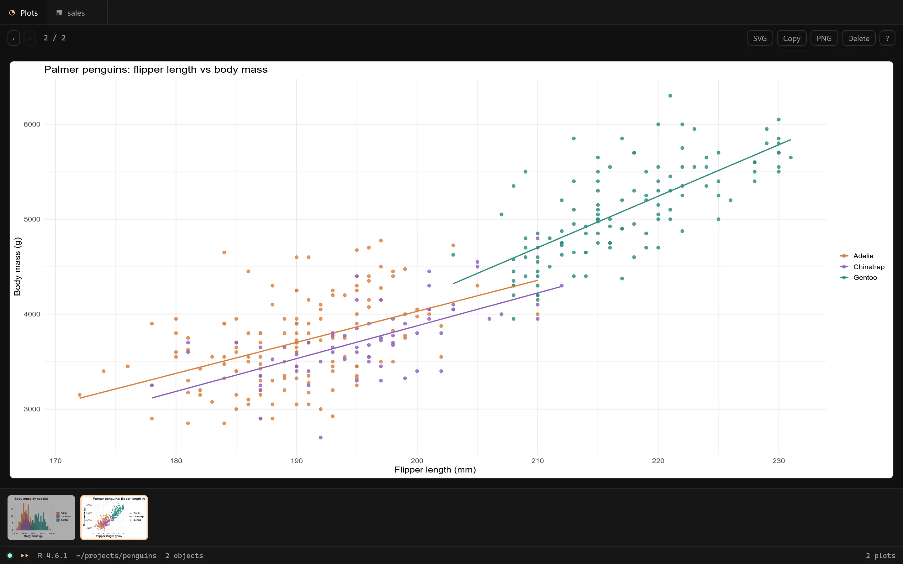

Plots and Mirador
Plots go to Mirador, a light page in your browser that shows each new plot about 80 ms after it is drawn. On a terminal that draws images, you can see them inside herdr too.
Mirador
Mirador shows your plots with their history (← and →) and a download as SVG or PNG, at the size of the window or at one you choose.
Mirador is new: it was written from scratch for Corral, exists only in Corral, and is not a fork of another viewer. Its server lives inside the corral binary, in Rust; the tables you open in it are DuckDB queries, the same ones the terminal's table viewer runs; and the page itself is one light HTML file, with no frameworks and nothing loaded from the internet.

Tables open here too when you send them: m in the table viewer or the variables pane, or View(df, mirador = TRUE). See Tables in Mirador.
The bar at the bottom shows the session (R or Python version, folder, number of objects and plots) and a dot that turns red if the page loses Mirador. With more than one session open, it has a picker to choose which one to show.
Opening it
The first plot of each session opens Mirador on its own, as a normal window, and brings it to the front. After that, Mirador updates without taking your focus.
- ctrl+b f brings it to the front at the latest plot.
- ctrl+b shift+m or
corral miradoropens it.
$ corral mirador --url
$ corral mirador --stop--url prints its address, to open it by hand. --stop stops its server. Mirador stays open after you close Corral, until you close its window.
Plot size
By default R draws each plot to fit Mirador's window, so a maximized window gives a big, stretched plot. The menu next to SVG keeps them at a size instead: 800 × 500, 1000 × 650, 1200 × 800, or any size you type in Other size…. R then draws them at that size whatever the window; a smaller window shows them whole and scaled down, and SVG, PNG and Copy use that size. Window goes back to fitting them.
It is one of Corral's settings, so every browser and every session share it, and it is in the palette ("Plots: Mirador draws them at…") and the terminal:
$ corral config plot_size 1000x650
$ corral config plot_size windowPython figures keep the size matplotlib gives them (figsize).
Copy a plot
Copy (or the c key) puts the plot in your clipboard as a PNG image, at twice its size on screen so it stays sharp, ready to paste into an email or a document without saving a file. ?, or the button with that sign, shows Mirador's shortcuts:
| Key | Action |
|---|---|
| ← → | Previous or next plot |
| c | Copy the plot as a PNG image |
| ? in a table | Also lists the table keys; see Tables in Mirador |
| ? | See these shortcuts |
Why it is fast
A new plot appears about 80 ms after the command that drew it ends. R and Python mark the change in a file when the command ends, and the page waits for that mark instead of asking every so often.
Plots are shown as SVG, except the ones that would weigh more than 2 MB (a scatter plot with tens of thousands of points), which are shown as PNG, so the browser doesn't have to build every point. A download in SVG is still SVG.
Only on your machine
Mirador listens only on 127.0.0.1, on port 7317 (or another free one if that is taken), and asks for a token on every request. The token is in ~/.local/state/corral/mirador.json.
Plot objects
Plots saved in variables (ggplot, lattice, patchwork) appear in the Plots tab of the variables pane. Enter on one draws it and opens it in Mirador. A plot object that is already drawn opens without being drawn again.
Python figures
matplotlib figures, and those of seaborn or plotnine, which draw with matplotlib, go to Mirador at the end of each run, as in Jupyter. plt.show() sends them at that moment. A figure saved in a variable appears in the Plots tab of the variables pane, and Enter shows it.
Python figures are saved when they are drawn (as PNG and SVG), and Mirador scales them. Unlike httpgd plots in R, they aren't drawn again when the window changes size.
Plots inside the terminal
On Windows, plots can't be shown sharply inside herdr. herdr only passes images with the Kitty protocol, and Windows' own terminals (Warp, WezTerm, Windows Terminal) reach WSL through ConPTY, which drops those sequences. We tested it: WezTerm on Windows drew neither Kitty nor Sixel. That is why plots go to Mirador on Windows.
On Linux, with a terminal that draws Kitty images (kitty, WezTerm, Ghostty), ctrl+b f shows the plots inside herdr. Corral detects which terminal each herdr window runs in (corral doctor shows it). With images on, the first plot doesn't open Mirador: a notice tells you to press ctrl+b f.
$ corral config images kittyimages takes auto (detect, the default), kitty or symbols (block characters). The CORRAL_IMAGES environment variable takes the same values and wins over the setting.
The in-terminal viewer draws with chafa (sudo apt install chafa). Its keys: ← → go through the history, o opens Mirador in the browser, q closes it. The repository keeps wezterm/wezterm.lua as a reference configuration for WezTerm with WSL.
Where the window goes
On Windows with WSL, Corral opens each new Mirador window unmaximized, on the right of the screen, and brings it to the front. To change that:
$ corral config mirador_size 0.4x0.7
$ corral config mirador_window freemirador_size is the fraction of the screen's width and height (0.5x0.85 by default). mirador_window free leaves the window's size and position alone; right is the default.
On WSL, Corral uses Firefox if you have it, otherwise Edge or Chrome, which open Mirador as an app window without tabs or address bar. On Linux it uses xdg-open. CORRAL_BROWSER picks another one (see Configuration).
R options for plots
In R, a few options change what the first plot does or which device draws; you set them in your .Rprofile. Configuration lists them: corral.viewer, corral.open_plots and corral.httpgd.
Local URLs
Ctrl+click on a local address in herdr (http://localhost:… or http://127.0.0.1:…) opens it in the browser: a quarto preview, httpgd's own page, a Shiny app. From the command line:
$ corral open http://localhost:4200Without a URL, corral open opens Mirador.